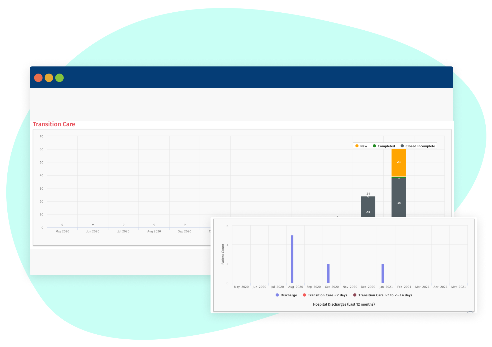
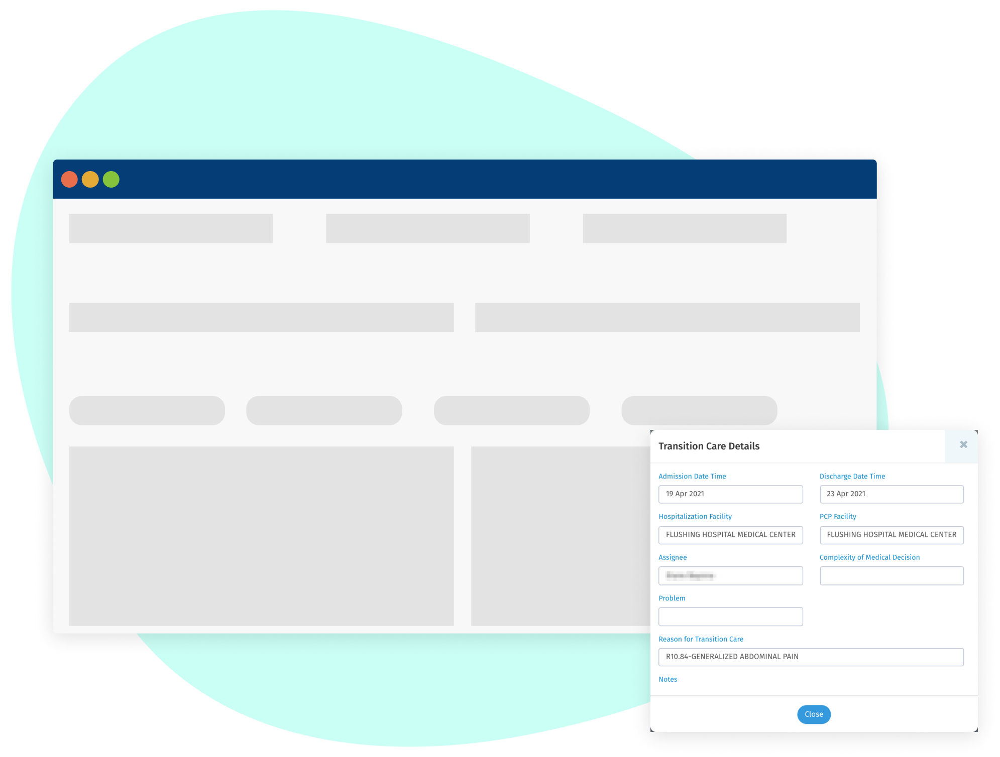

Transitional Care Management
Alerts on hospital admissions and discharges promotes better transition care management and reduces the risk of
readmission
Timely Identification of Admitted Patients
The key to good Transition Care Management (TCM) is timely identification of admitted patients. By synchronizing with
payers, Equipo is able to track hospitalizations for your patients and signal to your practice that additional outreach
and care planning is needed. This ensures providers engage patients within the critical 15-day post-discharge window.

Evidence-Based Clinical Tools
Our customizeable, automated transition care workflows reduce the likelihood of readmission and support seamless program
management - from patient enrollment and care plan creation, to patient communications and medications reconciliation,
to clinical documentation and claims reimbursement

Patient-Specific Post Acute Programs
Leveraging the full power of our platform ensures you are always connected to this critical patient segment. Our tools
help you evaluate the medical, social, and behavioral conditions that influence post-acute recovery and help you design
patient-specific care plans that reduce readmissions - particularly among high risk patients.
Drive your organizational rating goals and ROI by utilizing Equipo’s one stop solution. Gain meaningful insights by
combining multi-dimensional data from payors, pharmacy, community workers, case managers with your EHR data.


 33 Wood Avenue South
33 Wood Avenue South  info@equipohealth.com
info@equipohealth.com
 800.482.9082
800.482.9082